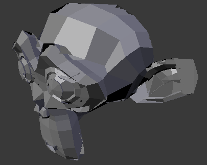

3D视图¶
绘制¶
深度缓冲区故障¶
Sometimes when setting a large clipping range will allow you to see both near and far objects, but reduces the depth precision resulting in artifacts.

Model with no clipping artifacts. |

Model with clipping artifacts. |

Mesh with artifacts in Edit Mode. |
{kind=link}
To avoid this:
- Increase the near clipping when working on large scenes.
- Decrease the far clipping when objects are not viewed at a distance.
When perspective is disabled only the far Clip-End is used, very high values can still give artifacts.
This is not specific to Blender, all OpenGL/ DirectX graphics applications have these same limitations.
性能¶
界面绘制缓慢¶
There are a couple of reasons why you may be experiencing a slow viewport.
- Old Hardware
- Sometimes your hardware, mainly your graphics card, may be too slow to keep up with your model.
- 升级显卡驱动
- In some cases, slow selection is resolved by using updated drivers.
选择很慢¶
Blender uses OpenGL drawing for selection, some graphics card drivers are slow at performing this operation.
这变得稠密几何特别成问题。
可能的解决方案：
- OpenGL 遮挡查询 (用户设置)
请参见: menuselection: 用户首选项--> 系统--> 选择'
此选项默认值 自动 ，尝试将其设置为 OpenGL遮挡查询 ，因为还有一些配置下显著的性能差异。
- 升级显卡驱动
- In some cases, slow selection is resolved by using updated drivers. It is generally good to use recent drivers when using 3D software.
- 选择中心
- 在 物体模式 ，按住
Ctrl的同时选择使用对象中心点。虽然这可能有用，自行其有不依靠 OpenGL 选择副作用。 - 修改绘制模式
- Using Wireframe or even Bounding Box draw modes can be used to more quickly select different objects.
Note
Obviously, the workarounds listed here are not long term solutions, but it is handy to know if you are stuck using a system with poor OpenGL support.
最终，如果没有这些选项工作它可能值得升级您的硬件。
工具¶
选择无效¶
有时候选择一些配置下的失败时，这也是经常网明显 编辑模式 ，选择顶点和边/面在那里选择随机元素。
Internally Blender uses OpenGL for selection, so the graphics card driver relies on giving correct results.
可能的解决方案：
- Disable Anti-Aliasing FSAA, Multi-Sampling
这是迄今为止最常见的原因的选择问题。
使用 FSAA/多-采样时，是知道一些显卡问题。
您可以禁用此选项:
- 关闭 FSAA 多 sampling 在您的图形卡驱动程序选项。
- Turning Multi-Sampling off in the system preferences.
- 更改抗锯齿示例设置
Depending on your OpenGL configuration, some specific sample settings may work while others fail.
不幸的找到工作配置涉及审判 & 错误测试。
- 升级显卡驱动
作为任何 OpenGL 相关的问题，使用新的驱动程序可以解决问题。
However, it should be noted that this is a fairly common problem and remains unresolved with many drivers.